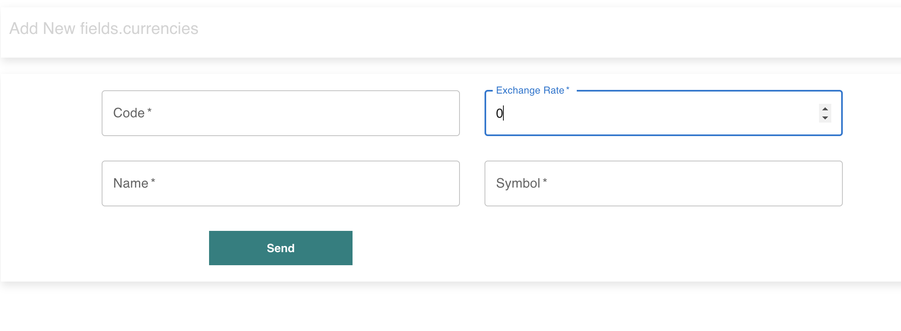
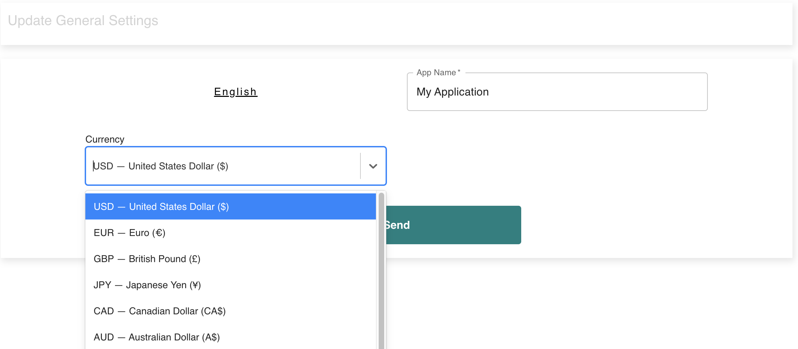
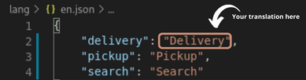
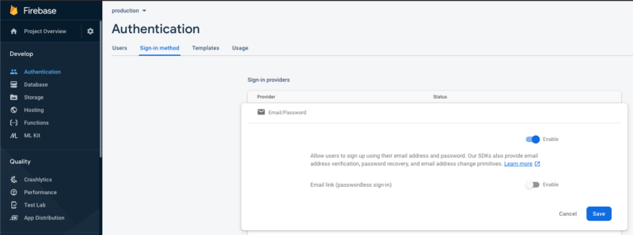
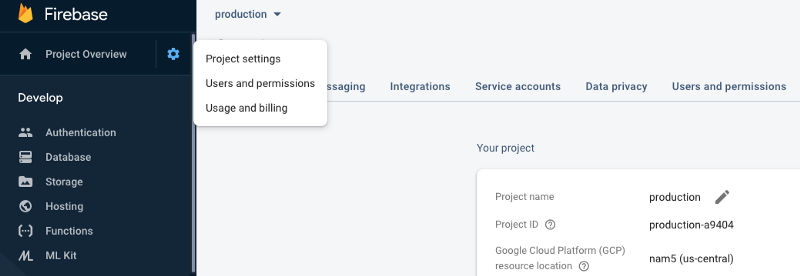
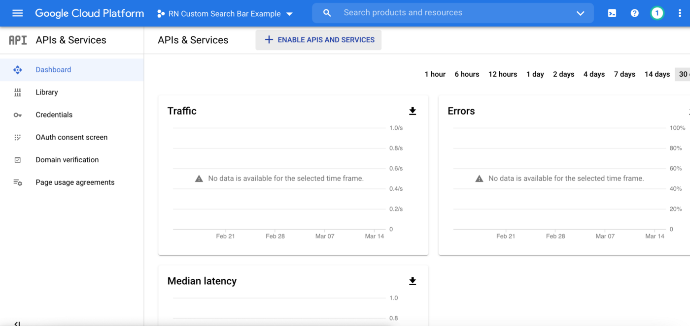
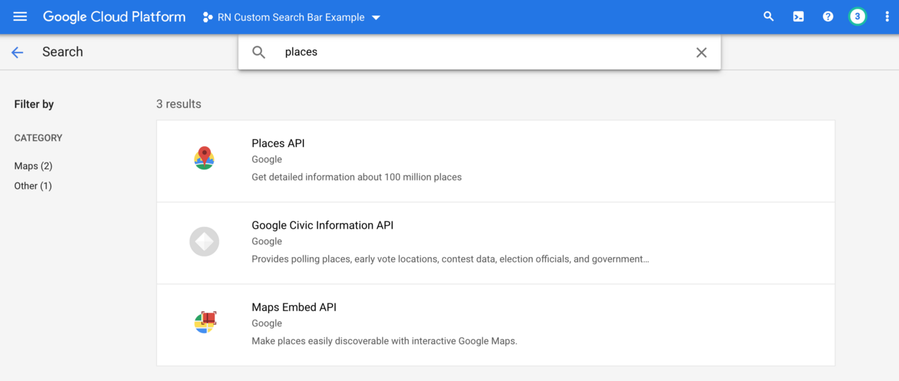
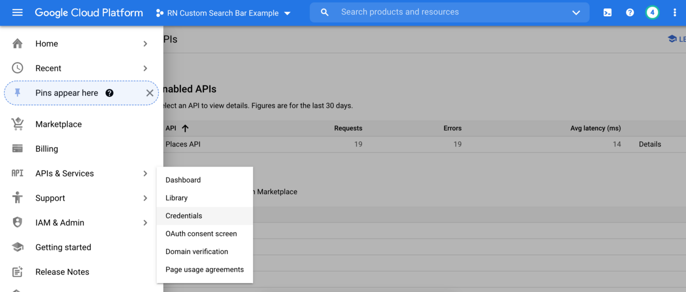

Environment setup
Node.js, Expo CLI (command lines), languages (i18n), API reachability from devices, Google Maps for production, and app currency — one place for the whole suite.
Then continue with Customer app — Getting Started, Restaurant app — Getting Started, Admin app — Getting Started, or Driver app — Getting Started.
Node.js
Node.js runs JavaScript on your computer and ships with npm, which installs the mobile apps' dependencies.
Use an LTS (Long Term Support) release (for example 18.x or 20.x).
Install for your operating system:
brew install nodenode --version
npm --versionExpo — installation and commands
The mobile apps use React Native with Expo (~54) and a custom native stack.
Install dependencies with npm install in customer-app, delivery-app, or restaurant-app.
Node.js 20+ is required.
1) Use Expo from the project (recommended)
After Node.js is installed, open the app folder and install dependencies. Then start the dev server with npx (uses the CLI shipped in node_modules):
cd customer-app # or: cd delivery-app
npm install
npx expo --version
npx expo start
The same thing is usually wired as npm start in package.json, so you can run npm start instead of npx expo start if you prefer.
expo-dev-client / native project under android/ and ios/).
First install: npm run android or npm run ios. Later sessions: npm start, then open the installed app.
After the development build is installed, you can press a / i in the Expo terminal if it resolves your installed client — otherwise open the app icon on the device/emulator.
2) Optional — global Expo CLI
If you want the expo command available in any directory (without npx):
npm install -g @expo/cli
expo --version
# then from the app folder:
expo start3) Optional — EAS CLI (cloud builds, store submission)
For eas build, eas submit, and related workflows:
npm install -g eas-cli
eas --version
eas loginOfficial reference: Expo — installation and EAS Build.
4) Development build on a physical device
Connect the phone with USB debugging (Android) or a signed iOS development device, then run
npm run android / npm run ios once from the app folder.
Point EXPO_PUBLIC_API_URL at your computer’s LAN IP (not localhost on a physical phone).
For Metro over USB you can also use adb reverse tcp:8081 tcp:8081.
5) Android Studio and Xcode
- Android Studio — Android emulator, SDK, and local Android builds.
- Xcode (macOS only) — iOS Simulator and App Store builds.
On macOS, Watchman can speed up file watching: brew install watchman.
6) Backend
Keep a running REST API (for example my-backend) reachable from your computer and from any phone you use for testing — see API reachability.
App currency (change)
Set the platform currency entirely from the Admin app — no changes in customer, driver, restaurant, or backend source code. After you add a currency, choose it as the main currency in general app settings so every client uses it.
1) Add a currency
Under Currencies (resource currencies), create the currency you need: code, name, symbol, and exchange rate.

2) Set it as the main currency
Open Settings → App Settings / general settings and select that currency as the default (main) currency for the platform, then save.

3) Refresh clients
Restart or refresh mobile apps so they reload settings. Driver and restaurant apps may cache settings — clear cache or sign out and back in if the old symbol still appears.
Languages (i18n)
The suite ships UI strings in English, French, Spanish, and Arabic
(Arabic is RTL). Mobile apps follow the device locale via expo-localization
when a matching pack exists; users can also switch language in Settings.
Where the files live:
- Customer app:
lang/en.json,fr.json,es.json,ar.json— configured inlang/i18n.js - Driver / Restaurant apps: same four files under
lang/, wired in rooti18n.js - Admin app:
src/locales/en.json,fr.json,es.json,ar.json - Backend:
src/locales/+ language documents (see migration44-market-adaptability.js)
Market / channel context: Admin — Languages (and Currencies & taxes).
To add another language:
- Create a new JSON file in
lang/(orsrc/locales/for admin/backend). - Copy the full key structure from
en.jsonand translate only the values. - Import and register the locale in the app's i18n entry the same way EN/FR/ES/AR are registered.
- Optionally upsert a
languagesdocument in MongoDB (code, name,rtl).
Restart the dev server after editing translations (npm start or npx expo start).
Translation (how to edit)
It's very easy to customize the experience for specific regions, languages, or cultures. It also provides access to the locale data on the native device.
In en.json file, inside of lang folder, you can translate for your specific language

API reachability (devices vs localhost)
In your app config, API_BASE_URL must point to a host and port your phone or emulator can actually reach.
192.168.1.20:5000, use that LAN IP in the URL — not localhost, because on the phone "localhost" means the phone itself, not your computer.
Simulators on the same machine can sometimes use special host aliases (for example Android emulator's 10.0.2.2); use whatever your platform documents for reaching the host from the guest.
Firebase Cloud Messaging (push notifications)
In Good Food Pro, users, restaurants, orders, and auth live on your Node.js + MongoDB API (JWT) — not in Firebase as a database. Firebase is used for push notifications (FCM) on the mobile apps.
- Create a project on Firebase Console
- Add Android / iOS apps for Customer, Driver, and Restaurant as needed
- Download
google-services.json(Android) and/or the iOS GoogleService plist - Enable Cloud Messaging — you do not need Firebase Authentication or Firestore for the Pro stack
- Put the FCM / Firebase config into each mobile app following that app's Getting Started notes
Auth and data: configure API_BASE_URL against my-backend.
Push: wire FCM so order events from the API can notify devices.

Where to find project credentials
Open Firebase Console → Project Settings for app IDs, Cloud Messaging keys, and downloadable config files.

Get Google Places API key
In order to implement autocomplete functionality, we need to get an API for Google Places API.
Go to Google Cloud Platform
Visit Google Cloud Platform console to get an API key to use “Google Maps Javascript API”.
Create a project and enable the API
First, create a new project on the console and navigate to “APIs and Services” on the left drawer navigation. Then, click on “ENABLE APIs AND SERVICES” on the dashboard.

On the next screen, search for “Places API” and enable it.

Generate an API key
After enabling the API, you need to create a key to actually use the API. navigate to “Credentials” under “APIs & Services”, and click on “CREATE CREDENTIALS” in the upper middle of the screen and choose “API key”.

This will generate an API key, so keep it somewhere safe because you need it later to use the API in the app.
Create a billing account and link it to the project
In order to get results from the API, your Google Cloud project need to have a billing account linked to your project. You can create a billing account and link it to your project on the “Billing” page.
Google Maps (Expo, production Android)
Some map experiences may use Google Maps SDKs on customer builds. The driver app uses MapLibre by default and does not require a Google Maps API key in config.js.
When a Google key is needed for a production APK/AAB, place it in your Expo Android config as below.
1. Open https://console.cloud.google.com
2. Create or select a project
3. Enable "Maps SDK for Android" (and Maps SDK for iOS if you ship to the App Store)
4. Credentials → Create credentials → API key{
"expo": {
"android": {
"config": {
"googleMaps": {
"apiKey": "YOUR_KEY_HERE"
}
}
}
}
}
If your project also reads a key from config/index.js (customer) or config.js (driver), keep that value in sync. Rebuild with eas build or your usual Expo workflow after changing keys.